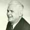
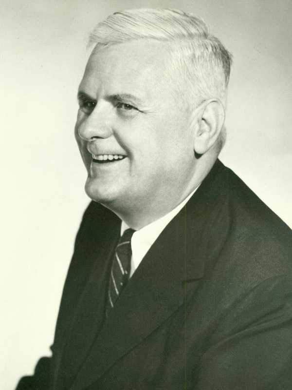

<div class="profile"><div>
  <div class="source">
Lambda calculus (1935)
  </div>
  <div class="detail">
    
    <div class="search"><a href="http://www.google.com/cse?cx=partner-pub-6997921015773263:4467526896&ie=UTF-8&q=Alonzo Church" target="_blank"></a> | <a href="http://en.wikipedia.org/wiki/Alonzo_Church" target="_blank">wiki</a></div>
    <div class="name">Alonzo Church</div>
    <div class="info"><b>Alonzo Church</b> (June 14, 1903 – August 11, 1995) was an American mathematician and logician who made major contributions to mathematical logic and the foundations of theoretical computer science. He is best known for the lambda calculus, Church–Turing thesis, Frege–Church ontology, and the Church–Rosser theorem. 
    <p><b><a href="http://en.wikipedia.org/wiki/Lambda_calculus" target="_blank">Lambda calculus</a></b> was introduced by Alonzo Church in the 1930s as part of an investigation into the foundations of mathematics. Lambda calculus, also written as <b>λ-calculus</b>, is a formal system for function definition, function application and recursion. The portion of lambda calculus relevant to computation is now called the untyped lambda calculus. In both typed and untyped versions, ideas from lambda calculus have found application in the fields of logic, recursion theory (computability), and linguistics, and have played an important role in the development of the theory of programming languages (with untyped lambda calculus being the original inspiration for functional programming, in particular Lisp, and typed lambda calculi serving as the foundation for modern type systems).</p>
    </div>
  </div>
  <div class="photo">
    
  </div>
</div></div>